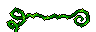
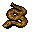
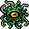
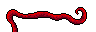
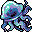
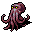

締めつけ Constriction
英語版 CrawlWiki の記事「Constriction」(0.34 向け、2026-07-04 版)の翻訳です。原文の著者は編集履歴をご覧ください。
締めつけとは、相手をつかんでその場から逃げられないようにし、何ターンもかけて締め殺そうとすることだ。締めつけられた相手はEVが下がり、離れることもできなくなる。
目次
締めつけてくるものの一覧
モンスター
- N
 ナーガ
ナーガ - N
 ナーガの魔術師
ナーガの魔術師 - N
 ナーガの達人射手
ナーガの達人射手 - N
 ナーガの儀式者
ナーガの儀式者 - N
 ナーガの戦士
ナーガの戦士 - N
 ナーガの豪族
ナーガの豪族 - w

鞭打蔦 - S

ニシキヘビ - S
 アナコンダ
アナコンダ - X

触手の怪物 - w

触手 - J

形なきクラゲ - x

オクトポード - N
 ヴァシュニア
ヴァシュニア - x
 エリカ
エリカ - 絡まる木の根


プレイヤーの種族
変身
そのほかの締めつけの効果
- ボーグンジョルの忌まわしき掌握
- 根縛りのワンド
- 絡みつきのブランド
締めつけの始まり
近接攻撃での締めつけ
締めつけのできるキャラクターやモンスターが近接攻撃をすると(徒手格闘でなくてもよい)、締めつけが起こることがある。条件は次のすべてを満たすことだ。[1]
- 攻撃する側がほかの相手を締めつけていないこと。ただしオクトポードは別で、最大8体まで同時に締めつけていられる。もっとも、普通の手がふさがるごとにこの数は2ずつ減る(片手武器や副手のアイテム1つにつき -2、両手武器1つにつき -4)。
- 守る側がほかの相手に締めつけられたり、包み込まれたりしていないこと。
- 攻撃する側が相手を見えていること。
- 攻撃する側が混乱していないこと。
- 攻撃する側の体格が、守る側と同じかそれより大きいこと。
- 守る側が締めつけの攻撃を無効にしないこと(下を参照)。
- 守る側が攻撃する側の隣にいること(リーチのある武器でも、離れた相手は締めつけられない)。
以上の条件をすべて満たすと、攻撃する側の命中値(to_hit)と守る側の EV/SH で判定が行われる。プレイヤーの場合、これは普通の補助攻撃の命中値で、次のように計算される。
to_hit = 13 + 0.75 * 器用 + 0.3 * 戦闘スキル + 殺戮のボーナス + その他のボーナス[2]
モンスターの場合はこうなる。
to_hit = 18 + 1.5 * HD + その他のボーナス(モンスターが戦士型、たとえばナーガの戦士なら 1.5 を 2.5 に置き換える)
攻撃が当たれば締めつけが始まる。ただし、モンスターが近接攻撃で締めつけを始められる確率は2/3だ。
呪文での締めつけ
ボーグンジョルの忌まわしき掌握、根縛りのワンド、絡まる木の根では、条件は次のとおりだ。
これらの締めつけは必ず命中する。
絡みつき
絡みつきのブランドは、攻撃が当たるたびに50%の確率で敵を締めつける。ただし、締めつけが効かない敵や、すでに締めつけられたり包み込まれたりしている敵には効かない。一度に締めつけられるのは1体だけだ。
締めつけが効かないもの
- 不定形: ジェリーやスライムのほか、水の精霊や水化のプレイヤーも含む。
- 実体なし: ポルターガイスト、嵐化、霧化
- 棘: 針化と、悪魔の血族だけが得る棘の変異
- 固定アーティファクトのつるつるのスリッパ。
締めつけの継続
締めつけられている間、相手は毎ターンダメージを受け、どの方向にも動けず、EVに -10 の補正がかかる。離れようと動くと抜け出そうとしたことになり、プレイヤーの場合、1回目の成功率は40%だ。2回目は75%、3回目は100%に上がる。
ダメージの計算
10 aut ごとに与えるダメージは次のとおり。
(基本ダメージ) * (0.33 + 0.67 * (XL / 27))
- 基本ダメージ: プレイヤーが近接攻撃で締めつける場合は
2d[(110 + (25 * XL)) / 81]になる。ボーグンジョルの忌まわしき掌握や根縛りのワンドの場合は、そのときの威力で決まる。モンスターの場合は、その攻撃の基本ダメージになる。 - 経験レベルによる補正: 式の後ろの項によって、ダメージは経験レベルに比例して増える。レベル27のキャラクターは、レベル1のときの3倍のダメージを与える。
このダメージに、さらに次の補正がかかる。
- AC による軽減: ほとんどの近接攻撃とは違って、締めつけのダメージは0からACまでの乱数では軽減されない。軽減量は0から
1 + AC / 2までの乱数になる。つまり、締めつけは AC の半分を無視する。 - 時間による換算: 上の式で求まるのは 10 aut あたりのダメージだ。これを、そのターンに使った aut に合わせて換算する必要がある。たとえばダガーを最小ディレイ(5 aut)で振っているなら、上のダメージに(AC による軽減のあとで)
5/10がかけられる。
締めつけから逃れるには
抜け出そうとして成功するほかにも、振りほどく方法はいくつもある。
- 締めつけている相手を倒す。
- 締めつけている相手が今のマスから動くと、近接攻撃による締めつけは終わる(移動先が締めつけられている相手の隣でも同じ)。
- 絡みつきによる締めつけは移動したあとも続くが、相手が武器の届く範囲から出ると終わる。
- 他者のテレポート、転送、空間分離、イスケンデルンの爆破の秘術のような転位術の魔法でもこの状況を作れる。離散のダーツ、歪曲のブランドの武器、ゲルの重力タンバリンといったアイテムも同じだ。
- 締めつけている相手を混乱、麻痺、石化、恐慌、昏睡、変化で無力化すると、締めつけはすぐに解ける。
- 魅了するか、エリヴィロンの力で鎮めれば、締めつけはすぐに止まる。
- 締めつけが効かない状態になれば、すぐに締めつけ状態が終わる。
- 瞬間移動やテレポートなら、手段を問わず抜け出せる。
- バラチは蛙跳びで飛び離れれば、必ず締めつけから逃れられる。
- フォーミシッドの縦穴を掘る能力を使えば、必ず締めつけから逃れられる。
- ジンの聖域の能力で締めつけは解ける。
- ルーの力の解放と力強き跳躍を使えば、必ず締めつけから逃れられる。
変更履歴
- 0.32 で締めつけが作り直された。それより前は次のようだった。
- プレイヤーによる締めつけはどれも基本ダメージが低かったが、モンスターは締めつけが長引くほど大きなダメージを受けた(プレイヤーからの締めつけに限らない)。
- プレイヤーが抜け出せる確率はもっと複雑な式で決まり、瞬間移動などの効果でも確実には逃れられなかった。
- モンスターが抜け出せる確率は HD に関係なかった。
- 締めつけられたプレイヤーは EV に -3 の補正を受け、モンスターは体格に応じて EV が割られた。
- プレイヤーの近接攻撃による締めつけには腕力が関係した。
- 0.31 より前は、呪文やワンドによる締めつけは、使う側が相手を見えていないとかけられなかった。
- 0.18 以降、命中は器用だけで決まる。
- 0.12 より前は、ダメージに対する継続時間の補正がプレイヤーにもかかっていた。
出典
- ↑ actor.cc:740 (0.32.1)
- ↑ fight.cc:73 (0.32.1)
- ↑ monster.cc:3920 (0.32.1)
- ↑ player.cc:6974 (0.32.1)